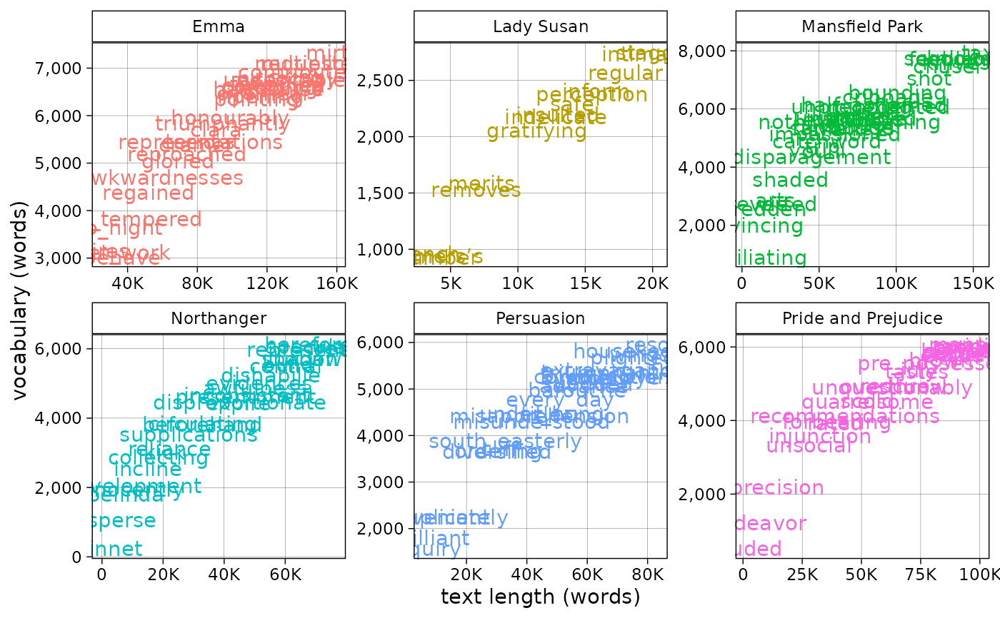

plot_hapax() visualizes a sampling of hapax legomena projected on faceted curves of vocabulary growth over time
Usage
plot_hapax(
df,
prop = 0.01,
x = progress_words,
y = vocabulary,
by = doc_id,
descriptive_labels = TRUE,
feature = hapax
)Arguments
- df
A tidy data frame, potentially containing columns called "doc_id" and "word"
- prop
The proportion of hapax to sample. The chart can become illegible with proportions over ~1%
- x
The progress column to show. Default option is progress_percent, but progress_words is also appropriate.
- y
The Y-axis variable to chart. Default value is the cumulative vocabulary size.
- by
A grouping column, such as doc_id
- descriptive_labels
A toggle for disabling descriptive labels of progress_percent on the X-axis
- feature
The column to check for new features. Defaults to
hapax, but the function might also be used withnew_wordinstead to plot a sample of new additions to documents' vocabularies.
See also
Other visualizing helpers:
change_colors(),
plot_bigrams(),
plot_doc_word_bars(),
plot_doc_word_heatmap(),
plot_htr(),
plot_tf_idf(),
plot_topic_bars(),
plot_topic_distributions(),
plot_topic_wordcloud(),
plot_ttr(),
plot_vocabulary(),
visualize()
Examples
austen <- "austen.rds" |>
system.file(package = "tmtyro") |>
readRDS()
austen_measured <- austen |>
add_lexical_variety()
austen_measured |>
standardize_titles() |>
plot_hapax()
